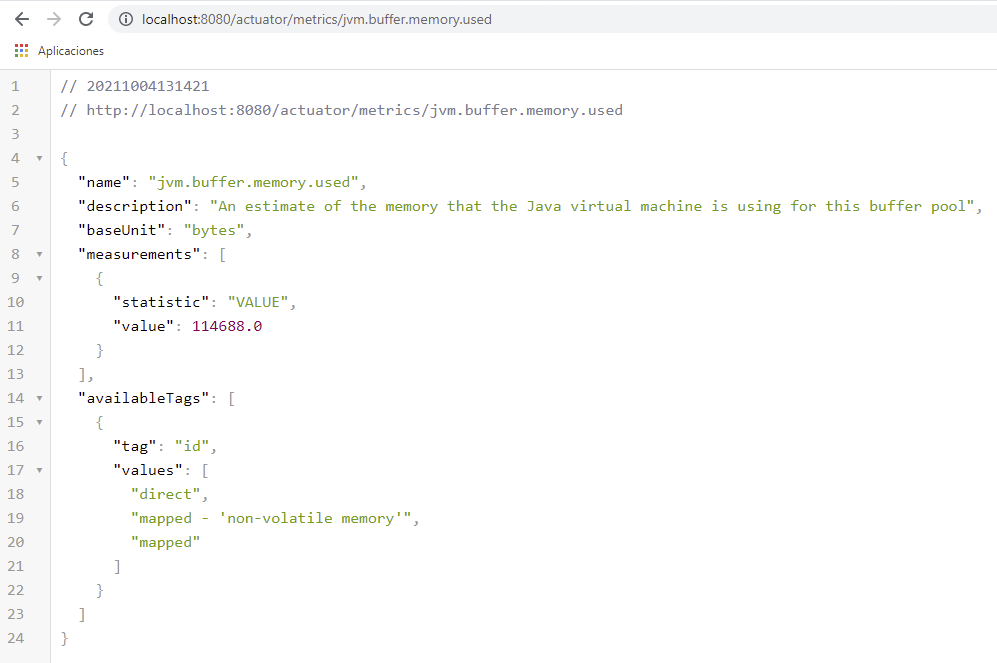
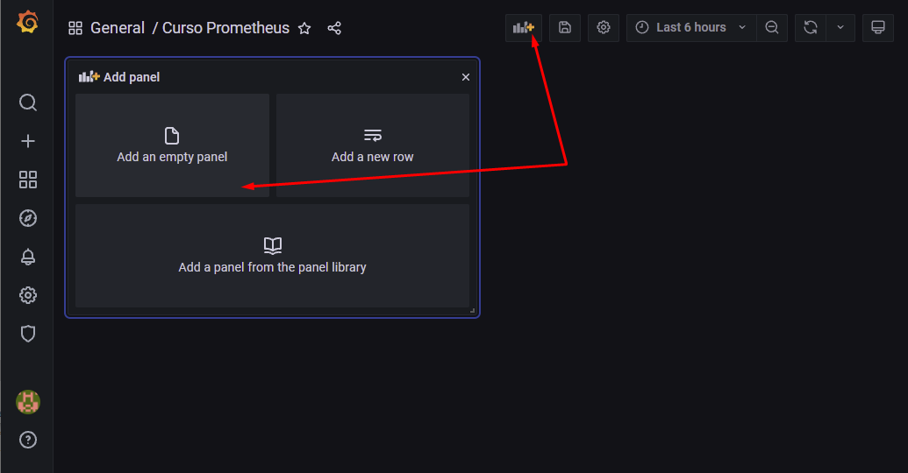

Monitoreo con Prometheus, Grafana, Spring boot y Docker
- Autor: Alejandro Agapito Bautista
- Fuente: Udemy
- Duración: 3,5 horas de vídeo
-
Sección 1: Introducción a Micrometer
-
Sección 2: Análisis de una aplicación REST y el ecosistema de métricas
-
Sección 3: Integración de Spring con Prometheus
-
Sección 4: Ejercicio práctico
-
Sección 5: Uso del Prometheus Push Gateway
1.2 - Características de un sistema de monitoreo
- Dimensionamiento: Existen sistemas jerárquicos (podremos navegar a través de las métricas y existe una dependencia entre ellas) y dimensional, las métricas se aplanan y no existe una jerarquía pero tienen tags que
permiten clasificar la información. Por ejemplo, si tengo una métrica que es el sueldo promedio, aplicaría a todos los empleados, pero a esa métrica le puedo agregar un tag que sea el puesto.
- Rate agregation: Cuando se simplifica un conjunto de datos, por ejemplo agrupándolos (promedio, suma, ...) en un periodo de tiempo.
- Publishing: Algunos sistemas esperan consumir métricas desde las aplicaciones y otros esperan que se publiquen de forma regular. (Prometheus es del tipo que las consume)
1.4. Uso del MeterRegistry
Una Medida es la interfaz para recolectar un conjunto de datos sobre tu aplicación. En Micrometer una medida se crea y mantiene en un MeterRegistry. Cada sistema de monitoreo tiene su propia implementación del MeterRegistry (por ejemplo, Prometheus tiene la suya).
La implementación de Micrometer del MeterRegistry se llama SimpleMeterRegistry, la cual mantiene el último valor de cada medida en memoria y no exporta la información a ningún lugar. Ideal en caso de que no tengas alguna preferencia con un sistema de monitoreo (SimpleMeterRegistry es como el log4j en los logs)
En aplicaciones basadas en Spring SimpleMeterRegistry es inyectado por default, si se incluye la dependencia de Prometheus el registry por default es PrometheusMeterRegistry
1.5. Uso del CompositeMeterRegistry
Micrometer provee un CompositeMeterRegistry donde puedes agregar múltiples registros, permitiendo publicar métricas a más de un sistema de monitoreo de forma simultanea.
Podría ser una opción si por ejemplo se está migrando de un sistema a otro y mientras queremos publicar para ambos.
1.6. Uso del GlobalRegistry
Micrometer provee un registro global static, para acceder a el puedes utilizar. Gracias a esto evitamos tener que crear el MeterRegistry en cada punto de la aplicación donde se quiera usar.
1.7. Tipos de Medidas
Micrometer viene con un conjunto de medidas soportadas entre las que se encuentran:
- Timer
- Counter
- Gauge
- DistributionSummary
- LongTaskTimer
- FunctionCounter
- TimeGauge
Una medida es identificada por su nombre y dimensión. Se utiliza el término dimensión y tags de forma indistinta. Dimensiones permiten a un nombre de métrica en particular ser partida para analizar los datos a profundidad.
1.8. Convención de nombres en los sistemas de monitoreo
Micrometer emplea una convención de nombres que utiliza minúsculas separadas con un '.' punto. Diferentes sistemas de monitoreo tienen diferentes sistemas de nombrado por lo que cada implementación de micrometer viene con un transformador a la estructura recomendada, puedes sobreescribir la convención de nombres por defaul implementando la interfaz NamingConvention
1.9. Uso de Counters
Un Counter reporta simplemente un contador sobre la propiedad específica de una aplicación. A continuación un ejemplo: meterRegistry.counter("devs4j.students", "profile","frontend").increment();
Documentación
1.10. Uso de Timers
Para medir latencias o frecuencia de eventos puedes utilizar Timers. Igual que los counters, se pueden crear a través de registry o con un builder. Documentación
1.11. Uso de Gauge
Un Gauge muestra el valor actual de una medida, son utilizados para monitorear estadísticas de cache, colecciones, etc.
2.12. Creación de proyecto de Spring Framework con Micrometer
Creó un proyecto base con las siguientes dependencias

2.13. Habilitando endpoints de Actuator
Si arrancamos la aplicación base creada en el punto anterior, como se ha añadido la dependencia de Actuator, se podrá acceder a http://localhost:8080/actuator donde tendremos algunas métricas (por defecto, sólo si el servidor está activo)
Añadiendo management.endpoints.web.exposure.include= en el applitacion.properties, podemos añadir más métricas: añadiremos health (que es la que tiene por defecto) y metrics.

2.15. Creando una métrica personalizada en Spring
Tras crear nuestra propia métrica, al acceder por primera vez a http://localhost:8080/actuator/metrics no la veremos, debemos acceder al menos una vez a la nueva métrica para que luego salga en este listado.
2.16. PrometheusMeterRegistry y el formato de Prometheuss
Si añado prometheus a la lista de métricas que se exponen (en el application.properties), y accedo a http://localhost:8080/actuator/prometheus se ve que el formato de las métricas es diferente. En /actuator/metrics/ veremos el formato de Metrics estándar, pero con prometheus ya vemos su propio formato.
2.17. Uso de Timer con Spring framework
Podremos medir el tiempo de un trozo de código concreto con timer.record() o de todo un método con @Timed("nombre.metrica"). Esta anotación también se podría usar a nivel de clase.
3.20. Descargando Prometheus utilizando Docker
Si buscamos Prometheus en Docker Hub encontraremos las instrucciones para instalarlo desde Docker: docker pull prom/prometheus
En la documentación de Prometheus encontramos cómo poder ejecutarlo: docker run -d -p 9090:9090 prom/prometheus
3.21. Conectando la imagen de Prometheus a nuestra aplicación
En el servidor de Prometheus (http://localhost:9090/) si vamos a Status->Configuration podremos obtener la configuración del servidor.
Copiando esta configuración, podemos crear el fichero prometheus.yml y adaptarlo para apuntar a nuestro servidor.
Teniendo este fichero, podemos arrancar Prometheus usando dicho fichero: docker run -d -p 9090:9090 -v C:/devel/fonts/cursoprometheusgrafana/prometheus/prometheus.yml:/etc/prometheus/prometheus.yml prom/prometheus
Al arrancar, no encontraremos nuestra métricas, primero debemos invocar al endpoint (por ejemplo http://localhost:8080/gmenar/metrics/timermetodo) y una vez ejecutado al menos una vez, ya aparecerá en Prometheus

3.23. Leyendo las métricas personalizadas de Spring desde
Si mostramos una métrica en Prometheus, esta irá mostrando los valores de forma acumulativa. Esto puede que no nos sea útil, por ejemplo si mi aplicación dejara de contestar no me enteraría porque me está mostrando el último valor.
Por ejmplo, si muestro el contador que había implementado en Spring, veo que la gráfica va sumando:

Si usamos la función rate (número de registros por unidad de tiempo) conseguimos resolver esto
Podríamos usar increase en vez de rate, si lo que queremos ver es el valor real en ese periodo y no un ratio
3.24. Descargando e iniciando imagen de Grafana
Si buscamos Grafana en Docker Hub encontraremos las instrucciones para instalarlo desde Docker: docker pull grafana/grafana
En la documentación de Grafana encontramos cómo poder ejecutarlo: docker run -d -p 3000:3000 --name=grafana -e "GF_INSTALL_PLUGINS=grafana-clock-panel,grafana-simple-json-datasource" grafana/grafana
3.25. Integrando Prometheus con Grafana
La contraseña por defecto para acceder a Grafana (http://localhost:3000/login) es admin/admin
Pasos para conectar Prometheus:
 "Add data source" -> Prometheus -> Indicar la URL: http://host.docker.internal:9090/ -> Save & Test
"Add data source" -> Prometheus -> Indicar la URL: http://host.docker.internal:9090/ -> Save & Test
3.27. Generación de tráfico
En el siguiente enlace está la documentación para generar tests en Postman. A continuación están los pasos para un test sencillo que podremos ejecutar indicando las iteraciones:


3.28. Creando un Dashboard con Grafana

3.29. Generando peticiones con errores
En el endpoint que estoy usando para obtener las métricas, he hecho que se generen excepciones de forma aleatorias, para mostrar en el dashboard cómo poder mostrar las peticiones agrupadas por estado:
Si nos fijamos en la métrica, además del tag status tenemos el outcome, que son grupos de estados. Podríamos agrupar por ellos:

3.30. Importando un dashboard de Grafana
En Grafana Labs puedo ver los Dashboards disponibles, en este caso nos interesa el de Spring Boot 2. Y en la descripción puedo copiar su ID (puedo importar un dashboard por su ID o copiando el JSON):
4.32. Introducción y descarga del proyecto base
Usaremos un proyecto ya existente: https://github.com/raidentrance/users-app-metrics
He copiado el código y lo he añadido a mi repositorio
4.34. Creando prueba para endpoint POST
Pasos para generar una petición que necesita datos dinámicos de entrada (por ejemplo, los datos de un usuario para autentificarlo):
4.35. Creando script de prueba para el borrado
Es similar al caso anterior, pero aquí no reutilizamos el JSON entero que devuelve la petición como entrada, sino un atributo de este:
También podríamos obtener todos los usuarios para no provocar errores si un ID concreto no existe:
4.40. Configuración de un notification channel
Podemos definir varios canales de notificaciones (correo, Telegram, llamada HTTP), pero para simplificar el ejemplo hemos elegido una llamada HTTP al endpoint de alerta que habíamos implementado:
4.41. Configuración de una alerta en grafana
5.44. Introducción al Prometheus Push Gateway
Push Gateway es una herramienta que proveé Prometheus que permite utilizar métricas con proyectos que no trabajan en un contexto web.
5.45. Iniciando Push Gateway utilizando Docker
En el repositorio Github del proyecto tenemos las instrucciones.
- docker pull prom/pushgateway
- docker run -d -p 9091:9091 prom/pushgateway